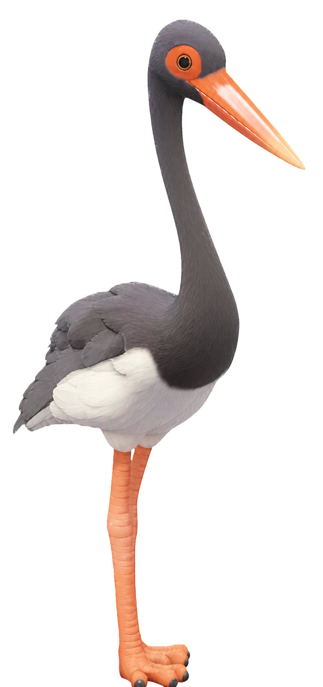

Fiche oiseau Heartopia
Cigogne noire
Black Stork
Dans Heartopia, Cigogne noire se trouve à Lac de la prairie. Cette fiche indique sa météo, ses horaires et le niveau de passion nécessaire.
- Zone
- Lac de la prairie
- Météo
- toute météo
- Horaire
- Après-midi, Soir, Nuit
- Niveau de passion
- 14
- Catégorie
- Échassiers